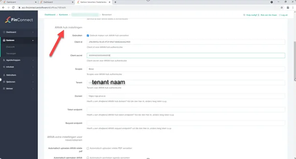
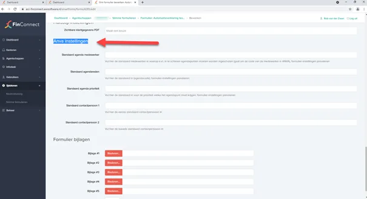
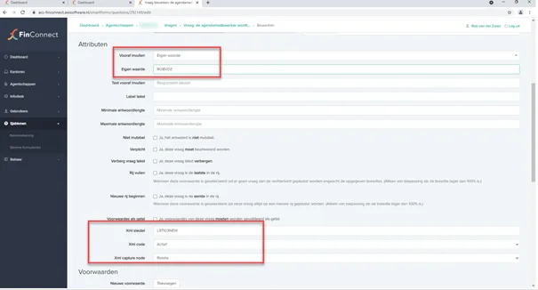
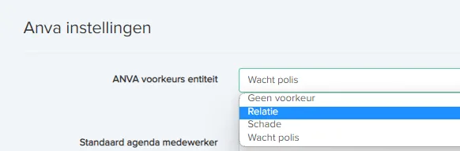
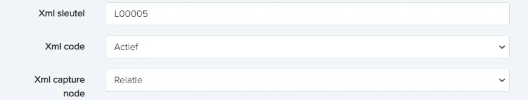
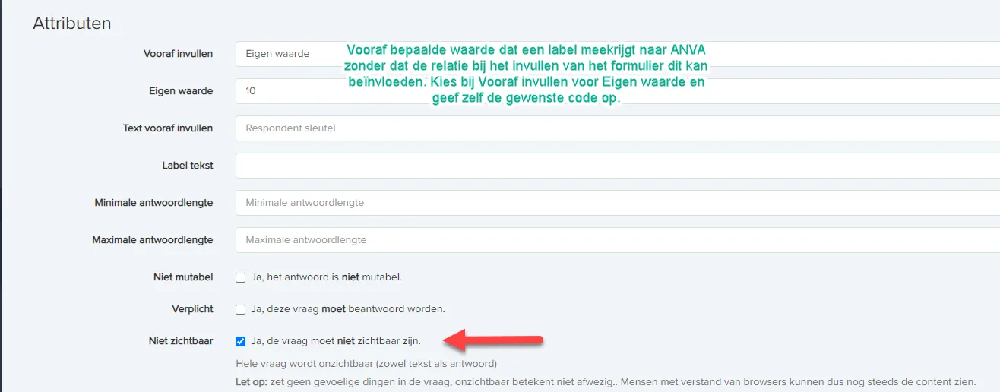
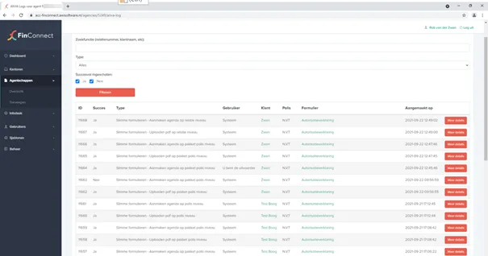
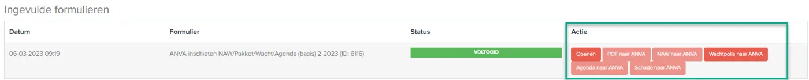

Slimme formulieren koppelen met ANVA
Leer hoe je Slimme Formulieren koppelt aan ANVA zodat gegevens, PDF’s, agenda’s, relaties en wachtpolissen automatisch worden aangemaakt.
Met de module ANVA koppeling voor Slimme Formulieren kan informatie vanuit FinConnect automatisch naar ANVA worden gestuurd. Hierdoor kunnen gegevens uit formulieren direct worden opgeslagen in ANVA.
De koppeling kan onder andere het volgende doen:
Een link naar het verzonden formulier opslaan in het ANVA dossier
Het ingevulde formulier als PDF opslaan in ANVA
Een agenda-item aanmaken
Een nieuwe relatie aanmaken
Een nieuw schadedossier aanmaken
Een wachtpolis aanmaken
De e-mails die verzonden zijn in ANVA vastleggen als Outlookbestand
Vereisten voor gebruik
Voordat de koppeling gebruikt kan worden, moeten de volgende modules actief zijn op kantoorniveau:
ANVA Direct
ANVA Slimme Formulieren
Slimme Formulieren – Capture XML (nodig wanneer je vragen wilt gebruiken om ANVA aan te sturen)
Daarnaast moet de koppeling met ANVA HUB correct zijn ingesteld.
ANVA HUB instellen
De koppeling met ANVA loopt via de ANVA HUB. Hiervoor moeten de juiste gegevens worden ingevuld.
Stappen:
Ga naar Kantoor instellingen.
Open ANVA hub instellingen.
Vul de gegevens in die door ANVA zijn verstrekt.
Test de verbinding met ANVA.
Sla de instellingen op.
Opmerking:
De benodigde HUB-gegevens kunnen worden opgevraagd bij de ANVA Helpdesk.
ANVA instellingen op kantoorniveau
Op kantoorniveau bepaal je welke informatie standaard naar ANVA wordt gestuurd.
Hier kun je onder andere instellen:
Automatisch uploaden van respondent PDF
Automatisch agenda aanmaken
Automatisch NAW aanmaken
Automatisch schade aanmaken
Automatisch wachtpolis aanmaken
Automatisch documentlink uploaden
E-mails als Outlookbestand in ANVA plaatsen
Belangrijk:
Deze instellingen bepalen wat er wordt ingeschoten naar ANVA. Bij de agent kan er worden afgeweken, maar dat moet dan wel apart bij de agent worden ingesteld.
Instellingen op agentniveau
Per agent kan worden bepaald of de ANVA-koppeling actief is. De agent moet ook minimaal de modules hebben als het kantoor om met ANVA te koppelen.
De volgorde waarin instellingen worden toegepast is:
Kantoorniveau (indien de kantoorinstellingen worden gevolgd)
Agentniveau
Formulierniveau
Vragen in het formulier
Het laagste niveau heeft altijd prioriteit.
Afwijken bij de agent t.o.v. de instellingen van het kantoor
In de basis volgt de agent, mits deze de juiste modules heeft, dezelfde ANVA-koppelingen als die van het kantoor. Het is echter mogelijk om hiervan af te wijken.
Stel dat op kantoorniveau de koppeling aan staat om agenda's in te schieten, maar de agent heeft dat voor zijn proces niet nodig. Dan kan dit bij de agent worden uitgezet. Of andersom: als bij het kantoor een optie uit staat, kan dit bij de agent weer aan worden gezet.
Stappen:
Ga naar de agent in FinConnect.
Bewerk de agent.
Open het tabblad ANVA instellingen.
Geef per onderdeel aan of er afgeweken moet worden ten opzichte van de kantoorinstellingen.

Formulierinstellingen voor ANVA
In formulieren kunnen specifieke instellingen worden toegevoegd voor ANVA.

Hier kunnen onder andere worden ingesteld:
Standaard agendamedewerker
Standaard agendaprioriteit
Contactpersoon 1
Contactpersoon 2
Bijlagen voor ANVA
Belangrijk:
Applicatieformulieren gebruiken altijd de instellingen van kantoor- of agentniveau.
Agenda automatisch aanmaken in ANVA
Voor agenda's moeten standaardwaarden worden ingesteld.
Verplichte defaults op kantoorniveau:
Agendamedewerker
Agendareden
Agendaprioriteit
Belangrijk:
Agendamedewerker en agendareden moeten altijd in hoofdletters worden ingevoerd.
Agenda instellingen aanpassen via formulier vragen
Je kunt agenda-instellingen ook aanpassen via vragen in het formulier.
Gebruik hiervoor XML-labels.
Voorbeelden:
Agendareden → L97014NEW
Agendamedewerker → L97103NEW
Agendaprioriteit → L97004NEW
Agenda contactpersoon 1 → L97127NEW
Agenda contactpersoon 2 → L97128NEW
Agendadatum → L97121NEW
Memo veld → LMEMO
De vraag moet een tekstvraag zijn.

Relatie of wachtpolis aanmaken
Je kunt via een formulier automatisch een relatie of wachtpolis laten aanmaken in ANVA.
Stappen:
Zet op kantoorniveau Automatisch aanmaken NAW of Automatisch aanmaken wacht aan.
Open het formulier.
Ga naar Formuliergegevens.
Scroll naar ANVA instellingen.
Kies bij ANVA voorkeursentiteit de gewenste optie.

Geen voorkeur
Relatie
Schade
Wacht polis
Belangrijk:
Als een formulier zowel een relatie als wachtpolis moet kunnen aanmaken, kies dan Wacht polis.
ANVA velden koppelen aan vragen
Om antwoorden naar ANVA te sturen, moet je XML-velden instellen.
AFBEELDING PLAATSEN: scherm met XML sleutel instellingen
Instellingen:
XML sleutel → ANVA label met letter L ervoor
XML code → Actief
XML capture node → bijvoorbeeld Relatie, Agenda, Polis of Schade
Gebruik van ANVA vertaalcodes
Bij listbox vragen kun je ANVA-codes gebruiken.

Stappen:
Maak een listbox vraag.
Zet Heeft ANVA vertaalcodes aan.
Vul per keuze de ANVA-code in.
Voorbeeld:
De heer → code 1
Mevrouw → code 2
De gebruiker ziet alleen de tekst, niet de code.
Verborgen velden gebruiken
Soms wil je een ANVA-waarde meesturen zonder dat de gebruiker deze ziet.

Stappen:
Maak een vraag met de gewenste waarde.
Zet bij attributen Niet zichtbaar aan.
Belangrijk:
De vraag wordt niet getoond, maar wordt wel naar ANVA gestuurd.
Formulier als iFrame gebruiken
Een formulier kan op een website worden geplaatst.
Stappen:
Ga naar Slimme formulieren → iFrame instellingen.
Zoek het formulier in de lijst.
Vink het formulier aan.
Kopieer de gegenereerde URL.
Plaats deze link op de website.
Belangrijk:
Het formulier mag niet als iFrame formulier ingesteld staan in de formulierinstellingen.
Logging en foutmeldingen
Alle acties richting ANVA worden gelogd.

Hier kun je:
Zien of een actie succesvol was
Foutmeldingen bekijken
Details openen van een mislukte actie
Wanneer een actie mislukt:
Ontvangt de agent een e-mail
Staat er een link naar de foutmelding in de mail
Kan de actie handmatig opnieuw worden uitgevoerd

Belangrijk
De kantoorcode uit ANVA (Label 00100) moet altijd beschikbaar zijn.
Zonder standaard agenda-instellingen kan het inschieten naar ANVA mislukken.
Gebruik bij voorkeur vraagtypes:
Tekstvraag
Numerieke vraag
Datumvraag
Listbox vraag
Andere vraagtypes kunnen problemen geven bij verwerking in ANVA.
Veelgestelde vragen
Vraag: Waarom wordt er geen agenda aangemaakt in ANVA?
Antwoord: Op de vraag "Waarom wordt er geen agenda aangemaakt in ANVA?" is het antwoord dat de standaardwaarden zoals agendamedewerker, agendareden en prioriteit mogelijk niet correct zijn ingesteld.
Vraag: Kan ik ANVA-instellingen per agent aanpassen?
Antwoord: Op de vraag "Kan ik ANVA-instellingen per agent aanpassen?" is het antwoord dat dit kan. Bij de agent kan bepaald worden of er wel een koppeling naar ANVA is én of er afgeweken wordt met wat er naar ANVA gestuurd wordt. Zie hiervoor de uitleg bij 'Afwijken bij de agent t.o.v. de instellingen van het kantoor'.
Vraag: Kan ik velden naar ANVA sturen zonder dat gebruikers ze zien?
Antwoord: Op de vraag "Kan ik velden naar ANVA sturen zonder dat gebruikers ze zien?" is het antwoord dat je een vraag kunt instellen als Niet zichtbaar, zodat deze wel wordt meegestuurd maar niet zichtbaar is in het formulier.
Vraag: Waar kan ik fouten in de ANVA koppeling bekijken?
Antwoord: Op de vraag "Waar kan ik fouten in de ANVA koppeling bekijken?" is het antwoord dat deze zichtbaar zijn in de ANVA logs, waar je details en foutmeldingen kunt bekijken.
Bron: helpcenter FinConnect